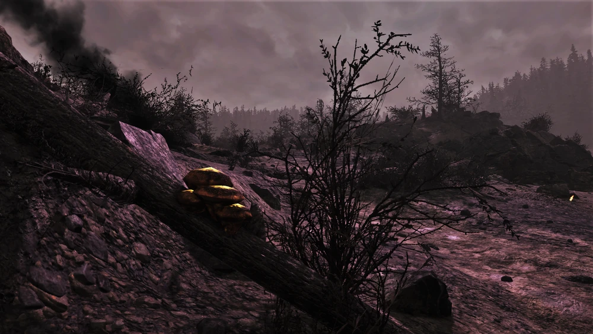

Blight (ブライト)
概要
ブライトは、主に積灰の山地域で見られる、枯れた木の幹に付着して成長する鮮やかな赤色またはオレンジ色の菌類です。収穫すると「ブライト」というアイテムを入手できます。
生物学と生息地
この菌類は積灰の山の汚染された環境、特に煙と灰に覆われた枯れ木で繁栄しているようです。その外見は木にできた腫瘍や病変のように見え、鮮やかな色が暗い風景の中で目立ちます。
効果
生のまま摂取した場合の効果は以下の通りです。
- HP回復: 25
- 食料: 5%
- Rads: +5
- 病気になる確率: 15%
クラフト
ブライトは、クッキングステーションで以下のアイテムを作成するために使用されます。
ブライトのスープ
- 材料: ブライトx1、汚れた水x1、木材x1
- 効果: HP回復：60 / 食料：20% / 水分：15% / 病気耐性：+15
- ボーナス効果: 30分間、クリティカルダメージが +50% 増加します。
- 注記: 草食動物の変異がある場合は +100%、さらに「Stranger in Numbers」Perkがあれば +125% まで上昇します。
ロケーション
- 積灰の山全域の枯れ木に自生しています。
- AMS実験場の周辺エリアに集中して生えています。
- ブラックウォーター鉱山の南側の斜面周辺で見つかります。
- ウェルチの周辺や北側の丘陵地帯でも見られます。
- Vault 63 の周辺エリアでも確認されています。
注記
パークカード「Green Thumb」を装備していると、一度の収穫で2倍の量（2つ）を入手できます。ブライトは腐るまでの時間が比較的早いため、使用する際は早めに調理するか、「Good with Salt」Perkや冷凍庫などで保存性を高めることが推奨されます。 他の植物と同様に、ブラストゾーン内で収穫すると、未処理の深紅の溶剤 に変化します。
ブライトは、一見すると積灰の山の殺風景な景色の一部に過ぎない毒々しいキノコですが、熟練のレジデントにとってはアパラチアで最も重要な植物の一つと言えます。
クリティカルビルドの要: ブライトのスープが提供する「クリティカルダメージの大幅な増加」は、火力を劇的に向上させる手段です。特にレイドにおいて、その効果は絶大です。
腐りやすさとの戦い: 効果が強力である反面、保存がきかないため、必要な時に必要な分だけ集めるか、保存用のPerkを工夫する必要がある点も、サバイバル要素としてのバランスが取れています。
草食動物の入門として: 手軽に作れて非常に協力な効果になっています。これは30分料理なのですが1時間Verのご飯もあります。ですが手間はもうちょっとかかるので入門としては十分な性能とコストパフォーマンスに秀でてます。ここから火力を目指すバフを考えてもいいと思います。
This article uses material from the Fallout wiki at Fandom and is licensed under the Creative Commons Attribution-Share Alike License.